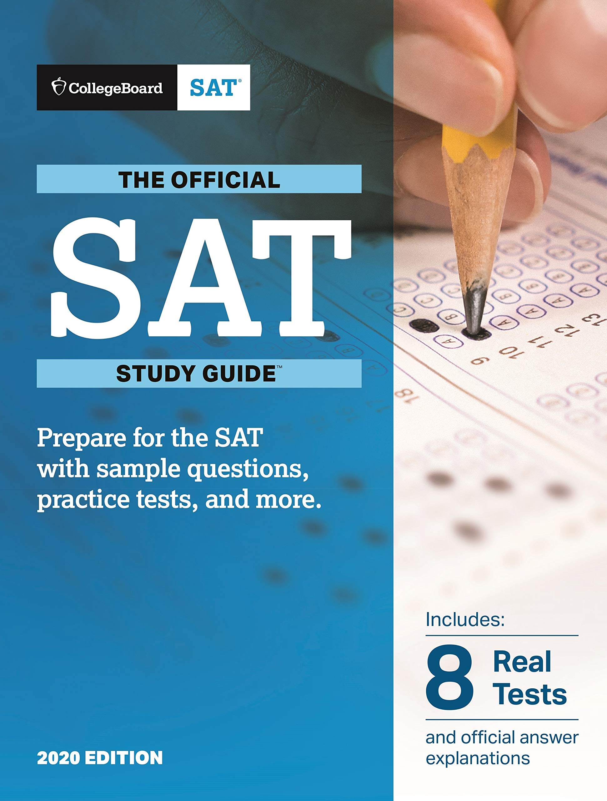
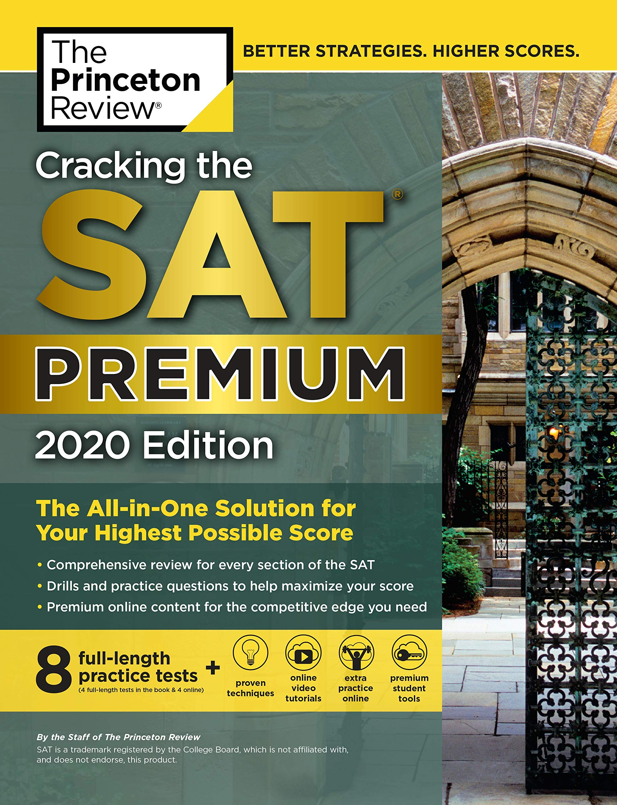
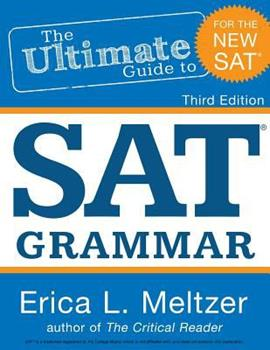
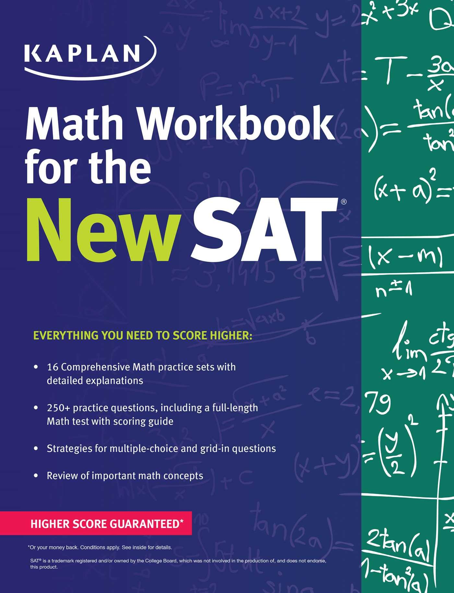
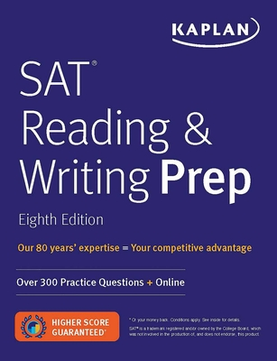
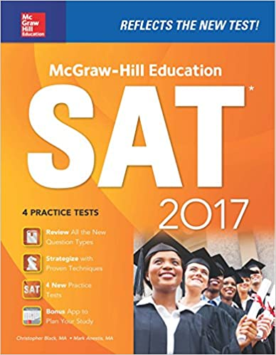
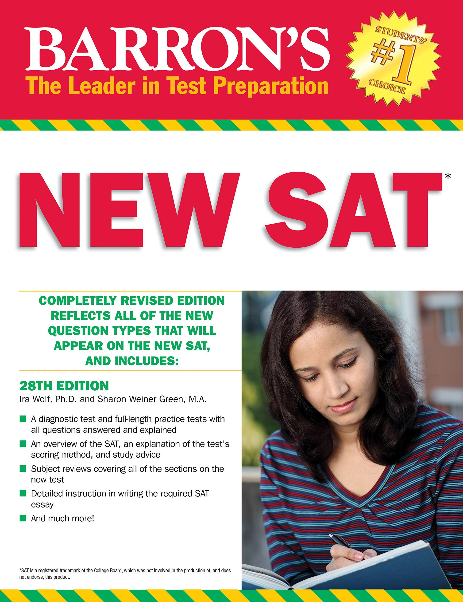

How to use this website?
To-Do List
There's a To-Do List section where you can list all the tasks that you want to do or doubts that you want to ask me.
Doubts
There's a Doubts section in the menu where you can e-mail your doubts to me, and I will reply to you with a solution and its explanation. There's no fee for this, so feel free to e-mail your questions.
Information about SAT
What is SAT?
Many colleges require scores from the SAT or ACT tests as a part of their admission process. Your SAT score is a key component of your college applications.
About SAT
The SAT is an entrance exam used by most colleges and universities to make admissions decisions. The SAT is a multiple-choice, pencil-and-paper test created and administered by the College Board.
The purpose of the SAT is to measure a high school student's readiness for college and provide colleges with one common data point that can be used to compare all applicants. College admissions officers will review standardized test scores alongside your high school GPA, the classes you took in high school, letters of recommendation from teachers or mentors, extracurricular activities, admissions interviews, and personal essays. How important SAT scores are in the college application process varies from school to school.
Overall, the higher you score on the SAT and/or ACT, the more options for attending and paying for college will be available to you.
When should I take the SAT?
Most high school students take the SAT, the ACT, or both during the spring of their junior year or fall of their senior year. It's important to leave time to re-take the test if you need to raise your score before you apply to college. The SAT exam is offered nationally every year in August, October, November, December, March, May, and June.
Checkout the upcoming test dates here: SAT test dates
What is on SAT?
There are two sections:
- Math
- Evidence-Based Reading and Writing
The SAT also includes an optional Essay section. SAT Essay scores are reported separately from overall test scores. Some colleges may require that you complete the SAT Essay.
How long is the SAT?
The SAT is 3 hours long. If you choose to take the SAT with Essay, the test will be 3 hours and 50 minutes.
How is the SAT scored?
Each section of the SAT is scored on a 200 to 800 point scale. Your total SAT score is the sum of your section scores. The highest possible SAT score is 1600. If you take the Essay, you will receive a separate score.
Books I used







Important Links for SAT